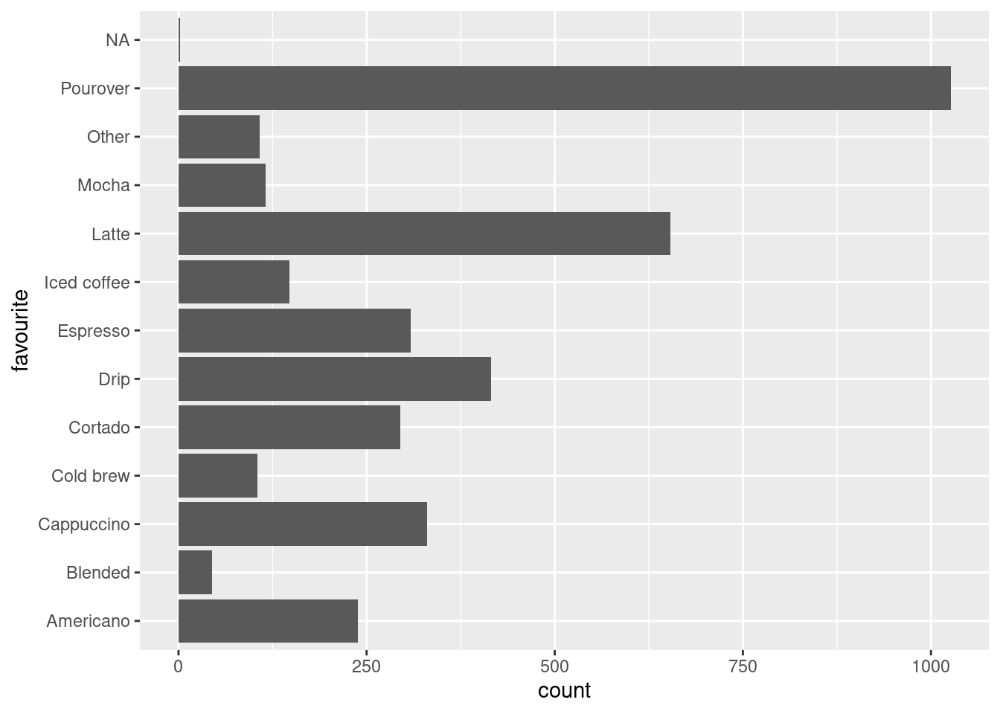
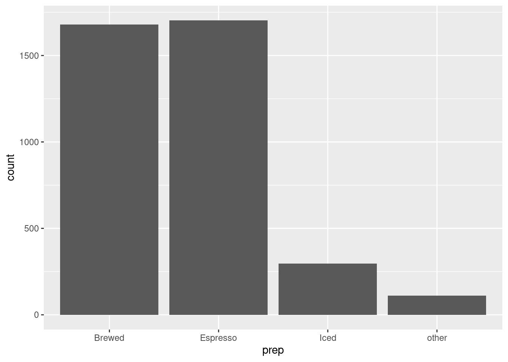
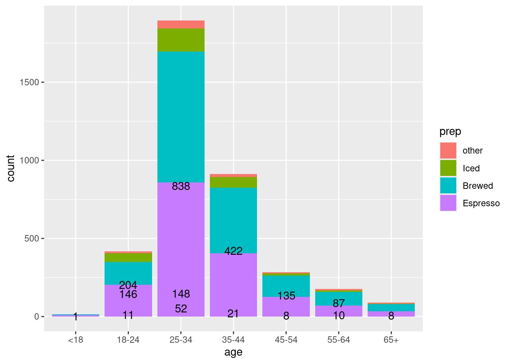
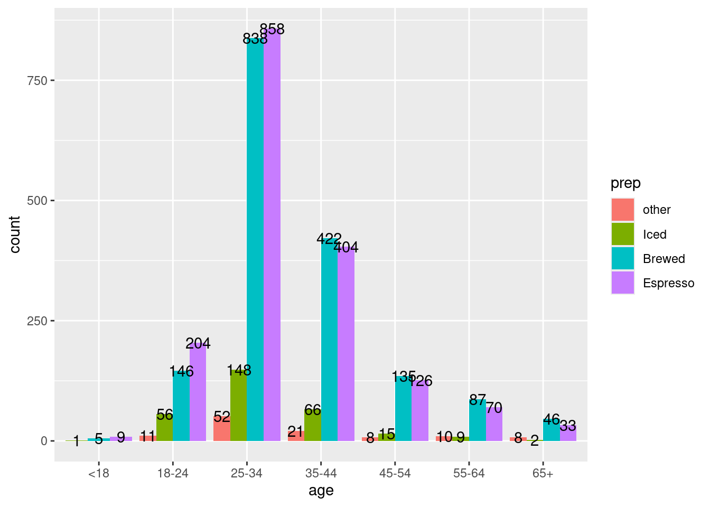
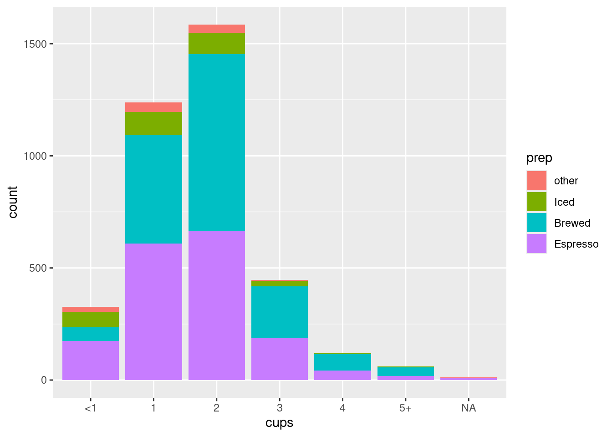
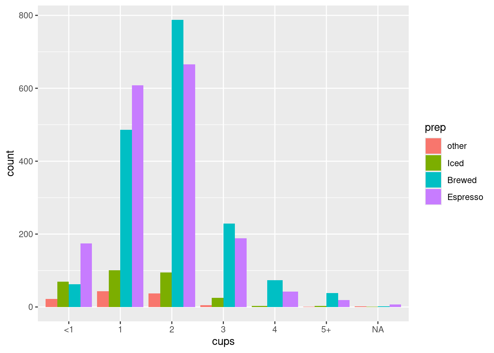
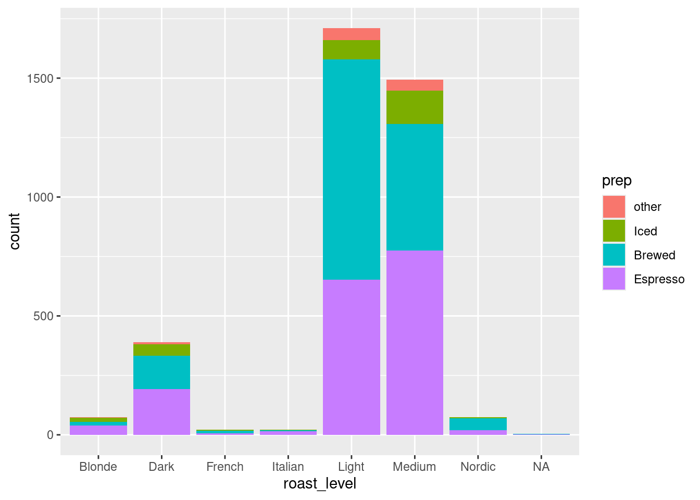
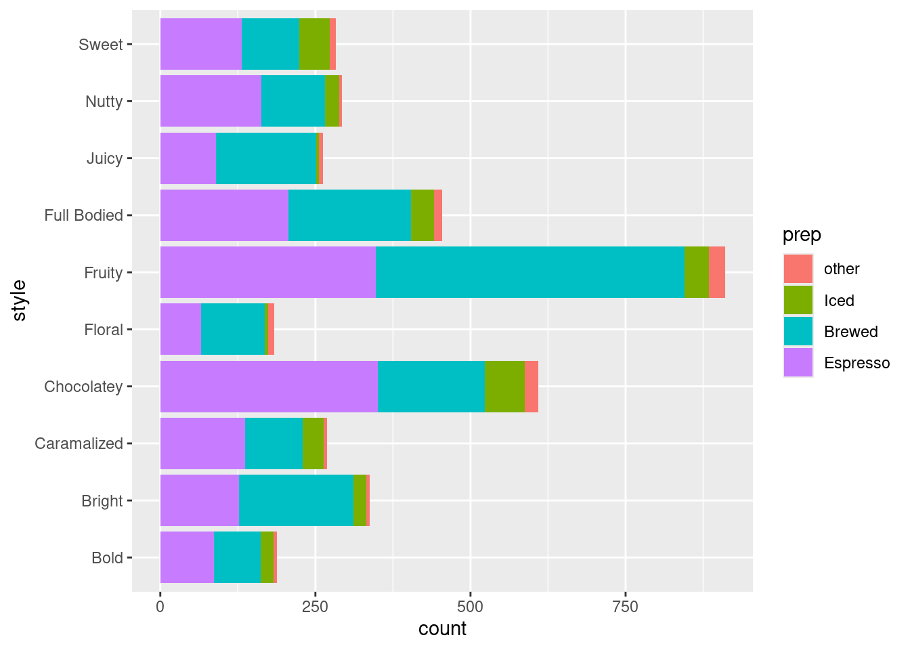

library(dplyr)
library(ggplot2)
library(ggrepel)
library(tidyverse)
library(stringr)
library(plotly)Coffee Project
R
26Summer
data: coffee_survey.csv
Coffee Consumption Group Project
1. Install The Libraries:
2. Install The Data:
coffee <- read.csv("../../../../data/coffee_survey.csv")3. Explore the data columns:
names(coffee) [1] "X" "age"
[3] "cups" "where_drink"
[5] "purchase_other" "favourite"
[7] "favorite_specify" "additions"
[9] "additions_other" "sweetener"
[11] "style" "strength"
[13] "roast_level" "caffeine"
[15] "expertise" "coffee_a_bitterness"
[17] "coffee_a_acidity" "coffee_a_personal_preference"
[19] "coffee_b_bitterness" "coffee_b_acidity"
[21] "coffee_b_personal_preference" "coffee_c_bitterness"
[23] "coffee_c_acidity" "coffee_c_personal_preference"
[25] "coffee_d_bitterness" "coffee_d_acidity"
[27] "coffee_d_personal_preference" "prefer_abc"
[29] "prefer_ad" "prefer_overall"
[31] "wfh" "total_spend"
[33] "know_source" "most_paid"
[35] "most_willing" "value_cafe"
[37] "spent_equipment" "value_equipment"
[39] "gender" "education_level"
[41] "employment_status" "number_children"
[43] "political_affiliation" Now we can select some coffee-related columns to explore people’s preferences
Let’s start with favourite type of coffee:
unique(coffee$favourite) [1] "Pourover" "Cortado"
[3] "Regular drip coffee" "Iced coffee"
[5] "Cappuccino" "Latte"
[7] "Cold brew" "Americano"
[9] "Espresso" NA
[11] "Other" "Mocha"
[13] "Blended drink (e.g. Frappuccino)"Age is also a useful variable to explore
unique(coffee$age)[1] "<18 years old" ">65 years old" "25-34 years old" "18-24 years old"
[5] "45-54 years old" "35-44 years old" "55-64 years old"Unfortunately this data is poorly formatted…
4. Prepare the data
Clean up the favourites column
coffee <- coffee %>%
mutate(favourite = str_replace_all(favourite, c(
"Blended drink \\(e.g. Frappuccino\\)" = "Blended",
"Regular drip coffee" = "Drip"))) Clean up the age column
coffee <- coffee %>%
mutate(age = str_replace_all(age, c(
" years old" = "",
">65" = "65+"))) Clean up the cups column
coffee <- coffee %>%
mutate(cups = str_replace_all(cups, c(
"More than 4" = "5+",
"Less than 1" = "<1"))) 5. Visualise Coffee Preferences
First let’s see the distribution of favourite coffee types:
ggplot(data = coffee,
mapping = aes(y = favourite)) +
geom_bar()
There’s still a lot going on here… We can simplify the data by grouping coffee types into broader preperation styles.
Group by Preperation Style
PrepStyle <- coffee %>%
mutate(prep = case_when(
favourite %in% c("Mocha", "Latte", "Cappuccino", "Cortado", "Espresso")
~ "Espresso",
favourite %in% c("Iced coffee", "Cold brew", "Blended")
~ "Iced",
favourite %in% c("Drip", "Pourover", "Americano")
~ "Brewed",
.default = "other"))Now we can visualise these groups
ggplot(data = PrepStyle,
mapping = aes(x = prep)) +
geom_bar()
Reorder Preperation Styles
PrepStyle$prep <- factor(PrepStyle$prep, levels=c(
'other', 'Iced', 'Brewed', 'Espresso')
)You can arrange the order of attributes to best visualise the data you are working with
Stacked Bar Graphs
Now we can add stacks to the bar graphs to explore relationships between preperation and other attributes
Preperation by Age
ggplot(data = PrepStyle,
mapping = aes(x=age, fill=prep)) +
geom_bar(position='stack') +
geom_text(aes(label = after_stat(count)),
stat = "count", position = "dodge", check_overlap = TRUE
)
ggplot(data = PrepStyle,
aes(fill=prep, x=age)) +
geom_bar(position='dodge') +
geom_text(aes(label = after_stat(count)),
stat = "count", position = position_dodge(.9)
)
Preperation by Cups
ggplot(data = PrepStyle,
mapping = aes(x=cups, fill=prep)) +
geom_bar(position='stack')
ggplot(data = PrepStyle,
aes(fill=prep, x=cups)) +
geom_bar(position='dodge')
Preperation by Roast
ggplot(data = PrepStyle,
mapping = aes(x=roast_level, fill=prep)) +
geom_bar(position='stack')
Preperation by Style
ggplot(data = PrepStyle,
mapping = aes(y=style, fill=prep)) +
geom_bar(position='stack')